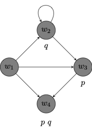

PHIL 452 · Modal Logic
Choose a stock of propositional variables or atoms:
\[ AT := p, q, r, \cdots \]
We define the formulas of a propositional language \(\mathcal{L}\) recursively:
\[ \varphi ::= AT \ | \ \neg \varphi \ | \ (\varphi \to \psi) \ | \Box \varphi \]
All atoms are formulas.
If \(\varphi\) is a formula, then \(\neg \varphi\) is a formula.
If \(\varphi\) and \(\psi\) are formulas, then \((\varphi \to \psi)\) is a formula.
If \(\varphi\) is a formula, then \(\Box \varphi\) is a formula.
Nothing else is a formula.
\[ \begin{array}{lll} \top & := & (p \to p)\\ \bot & := & \neg \top \\ (\varphi \vee \psi) & := & (\neg \varphi \to \psi)\\ (\varphi \wedge \psi) & := & \neg (\varphi \to \neg \psi)\\ (\varphi \leftrightarrow \psi) & := & (\varphi \to \psi) \wedge (\psi \to \varphi)\\ \Diamond \varphi & := & \neg \Box \neg \varphi\\ \end{array} \]
Given a condition on formulas of \(\mathcal{L}^\Box\), if
all atoms meet the condition,
a formula \(\varphi\) meets the condition only if \(\neg \varphi\) does,
two formulas \(\varphi\) and \(\psi\) meet the condition only if \((\varphi \to \psi)\) does, and
a formula \(\varphi\) meets the condition only if \(\Box \varphi\) does,
then all formulas of \(\mathcal{L}\) meet the condition.
Given a formula \(\varphi\) with propositional variables \(p_1, \dots, p_n\) and formulas \(\psi_1, \dots, \psi_n\), we define
\[ \varphi[\psi_1/p_1, \dots, \psi_n/p_n] \]
by the recursion:
\[ \begin{array}{lll} p_i[\psi_1/p_1, \dots, \psi_n/p_n] & := & \psi_i \\ (\neg \chi) [\psi_1/p_1, \dots, \psi_n/p_n] & := & \neg \chi[\psi_1/p_1, \dots, \psi_n/p_n] \\ (\chi \to \rho)[\psi_1/p_1, \dots, \psi_n/p_n] & := & (\chi[\psi_1/p_1, \dots, \psi_n/p_n] \to \rho[\psi_1/p_1, \dots, \psi_n/p_n])\\ (\Box \chi) [\psi_1/p_1, \dots, \psi_n/p_n] & := & \Box \chi[\psi_1/p_1, \dots, \psi_n/p_n] \\ \end{array} \]
We develop a possible worlds semantics for \(\mathcal{L}^\Box\).
A possible worlds model \(M\) for \(\mathcal{L}^\Box\) is a structure \((W, R, V)\) where:
\(W\) is a non-empty set of worlds
\(R\) is a binary accessibility relation on \(W\)
\(V\) maps each propositional variable \(p\) to a set of worlds \(V(p) \subseteq W\).
Note
\(Ruv\) is sometimes written \(uRv\) and read: “\(v\) is accessible from \(u\).” To be accessible from \(u\) is to be possible relative to \(u\).
\(V(p)\) is the set of worlds at which \(p\) is true. So, \(w \in V(p)\) is sometimes read: “\(p\) is true at \(w\).”
The directed graph below depicts a possible worlds model \((W, R, V)\) where:
\(W = \{w_1, w_2, w_3, w_4\}\)
\(R = \{(w_1, w_2), (w_2, w_3), (w_3, w_4), (w_1, w_4), (w_1, w_3), (w_2, w_2)\}\)
\(V\) is a valuation on which:

\(\varphi\) is true at a world \(w\) in a possible worlds model \(M\), written \(M, w \Vdash \varphi\):
\[ \begin{array}{lll} M, w \Vdash p & \text{iff} & w \in V(p)\\ M, w \Vdash \neg \varphi & \text{iff} & M, w \nVdash \varphi\\ M, w \Vdash (\varphi \to \psi) & \text{iff} & M, w \nVdash \varphi \ \text{or} \ M, w \Vdash \psi\\ M, w \Vdash \Box \varphi & \text{iff} & \text{for every} \ u \in W \ \text{such that} \ Rwu, \ M, u \Vdash \varphi\\ \end{array} \]
Given the defintion of \(\Diamond\) in terms of \(\Box\), we find that \[ \begin{array}{lll} M, w \Vdash \Diamond \varphi & \text{iff} & \text{for some} \ u \in W \ \text{such that} \ Rwu, \ M, u \Vdash \varphi\\ \end{array} \]
Evaluate each formula at each possible world in the model:
\(p \to (p \to q)\)
True at \(w_1\), \(w_2\) and \(w_3\)
\(\Box p\)
True at \(w_3\) and \(w_4\)
\(\Diamond \Box p\)
True at \(w_1\), \(w_2\) and \(w_3\)
A formula \(\varphi\) to be true in a possible worlds model \(M\), which we write \(M \Vdash \varphi\) if, and only if, for all \(w\in W\), \(M, w \Vdash \varphi\)
Evaluate each formula in the model:
\(\neg p \to \Diamond q\)
True in the model.
\(p \to \Box p\)
True in the model.
\(\Box \Diamond p\)
Not true in the model
A frame \(F\) for \(\mathcal{L}^\Box\) is an ordered pair \((W, R)\) where:
\(W\) is a non-empty set of worlds, and
\(R\) is a binary accessibility relation on \(W\)
A model \(M\) is based on a frame \(F = (W, R)\) if, and only if, there is an assignment \(V\) such that \(M = (F, V)\). That is, \(M = (W, R, V)\).
A formula \(\varphi\) is valid in a frame \((W, R)\), written \((W, R) \models \varphi\), if, and only if, \(\varphi\) is true in every model \((W, R, V)\) based on the frame \((W, R)\).
That is, the formula remains true across assignments no matter what sets of worlds we assign to what propositional variables.
A formula \(\varphi\) is valid, written \(\models \varphi\), if, and only if, \(\varphi\) is valid in every frame \((W, R)\).
Two valid formulas:
\(\Diamond (p \vee q) \leftrightarrow (\Diamond p \vee \Diamond q)\)
\(\Box (p \wedge q) \leftrightarrow (\Box p \wedge \Box q)\)
Two invalid formulas:
\(\Diamond (p \wedge q) \leftrightarrow (\Diamond p \wedge \Diamond q)\)
\(\Box (p \vee q) \leftrightarrow (\Box p \vee \Box q)\)
A formula \(\varphi\) is valid in a class of frames \(\mathcal{C}\), written \(\models_{\mathcal{C}} \varphi\) if, and only if, \(\varphi\) is valid in every frame \((W, R)\) in the class \(\mathcal{C}\).
For example:
\(\Box p \to p\) is valid in the class of reflexive frames.
\(p \to \Box \Diamond p\) is valid in the class of symmetric frames.
\(\Box p \to \Box \Box p\) is valid in the class of transitive frames.
| Formula | Condition on \(R\) | |
|---|---|---|
| \(\textsf{T}\) | \(\Box p \to p\) | reflexive on \(W\) |
| \(\textsf{B}\) | \(p \to \Box \Diamond p\) | symmetric on \(W\) |
| \(\textsf{4}\) | \(\Box p \to \Box \Box p\) | transitive on \(W\) |
| \(\textsf{5}\) | \(\Diamond p \to \Box \Diamond p\) | euclidean on \(W\) |